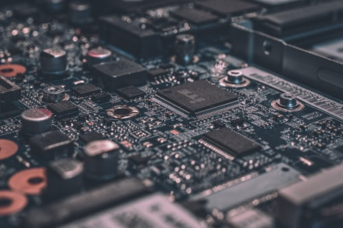
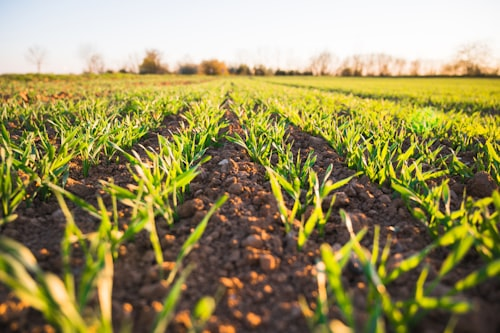
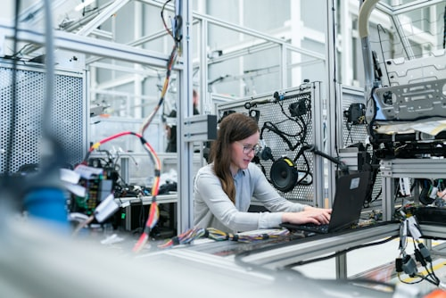
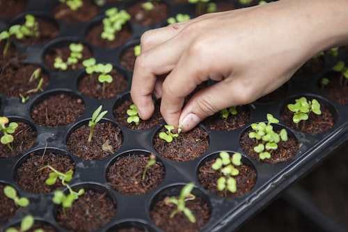

Autonomous / Field Robot
Agri-Pal
Autonomous line-following, obstacle-avoiding, crop-harvesting robot.




Loading render frames…
Scroll to assemble the bot
02
Detect
03
Harvest
You focus on the field. It handles the row.
— System / Live status
Live telemetry
Built to work the row, on its own.
Agri-Pal drives the crop row with an IR line-following PID loop, watches for anything in its path with ultrasonic ranging, and reaches out to pluck ripe produce into its payload.
Telemetry below is pulled straight from the on-board controller over the local API.
Battery
—
Mode
Standby
Last obstacle
None
Items plucked
0